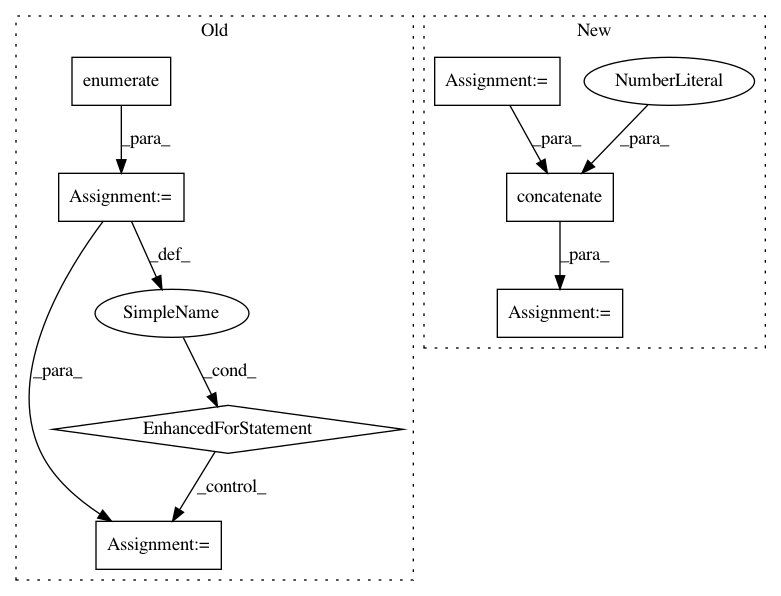

d4aa09c5b5b762b0b809d349cb7a8f50212a7107,theanolm/layers/softmaxlayer.py,SoftmaxLayer,create_structure,#SoftmaxLayer#,34
Before Change
preacts = []
for input_index, input_layer in enumerate(self.input_layers):
param_name = "input" + str(input_index)
preacts.append(self._tensor_preact(input_layer.output, param_name))
preact = sum(preacts)
// Combine the first two dimensions so that softmax is taken
// independently for each location, over the output classes.
After Change
``set_params()``.
layer_input = tensor.concatenate([x.output for x in self.input_layers],
axis=2)
preact = self._tensor_preact(layer_input, "input")
// Combine the first two dimensions so that softmax is taken
// independently for each location, over the output classes.
In pattern: SUPERPATTERN
Frequency: 3
Non-data size: 7
Instances
Project Name: senarvi/theanolm
Commit Name: d4aa09c5b5b762b0b809d349cb7a8f50212a7107
Time: 2016-06-20
Author: seppo.git@marjaniemi.com
File Name: theanolm/layers/softmaxlayer.py
Class Name: SoftmaxLayer
Method Name: create_structure
Project Name: daavoo/pyntcloud
Commit Name: 59ec6660464bd378b20d4ae200c7614133a9a38b
Time: 2019-08-26
Author: hc.wang96@gmail.com
File Name: pyntcloud/samplers/points.py
Class Name: FarthestPointsSampler
Method Name: compute
Project Name: senarvi/theanolm
Commit Name: d4aa09c5b5b762b0b809d349cb7a8f50212a7107
Time: 2016-06-20
Author: seppo.git@marjaniemi.com
File Name: theanolm/layers/tanhlayer.py
Class Name: TanhLayer
Method Name: create_structure